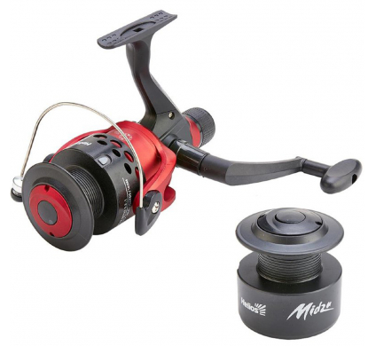
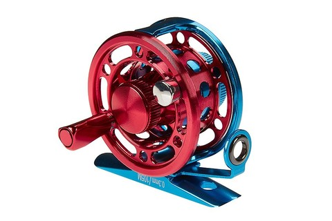

|
КАТУШКА БЕЗЫНЕРЦИОННАЯ HELIOS MIDZU 5000R Катушка MIDZU - универсальная безынерционная катушка с задним фрикционом, рекомендована для всех видов ловли рыбы. |

|
КАТУШКА ИНЕРЦИОННАЯ HIGASHI H-50 BLUE/RED Катушка H-50 - это универсальная проводочная катушка выполненная из алюминиевого сплава, покрытая антикоррозионным составом, оснащенная тремя подшипниками из нержавеющей стали, предназначена для оснащения как зимних так и летних удилищ. Она имеет больший «драг» по сравнению с серией HI-55 и может применяться в оснастке для ловли более крупного хищника на балансиры и тяжелые блесны. Оснащена направляющей лески и регулируемым тормозом. Конструкция спроектирована таким образом, что вы можете поменять расположение ручки и поставить ее как слева так и справа. Может применяться и в морской, и в пресноводной рыбалке. Сезонность: Всесезонный Производитель: Higashi Тип катушки: инерционная Применение : salt water Лескоемкость: 0.3мм/60м Вес, гр: 63,4 Передаточное число: 1: 1 Количество подшипников: 2+1 Артикул: 01612 |